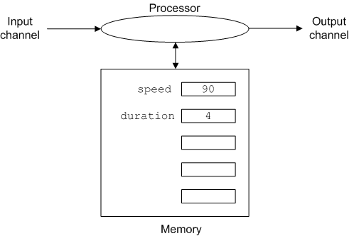

The first programming operation is input. A quick glance at our functional diagram will show you that the computer is empty, there is nothing in memory. We can't do any processing until we have something to process. The way we get something to process is to input it into the computer. An input statement accepts one value from the input channel and stores it in memory. An example will illustrate the details.
Conveniently Python names the input command input. To input a value and store it with the name speed and then input a second value and store it with the name duration we use the
commands,
speed = input()
duration = input()Each of these statements will look to the input channel, take the next
value from it, store it in memory and label the value. The first statement
labels the value it stores speed and the second labels its value
duration. Why label them? So we have a way to refer to them
later when we want to use them. The effect on our computer is shown below
(assuming the values entered are 90 and 4).
